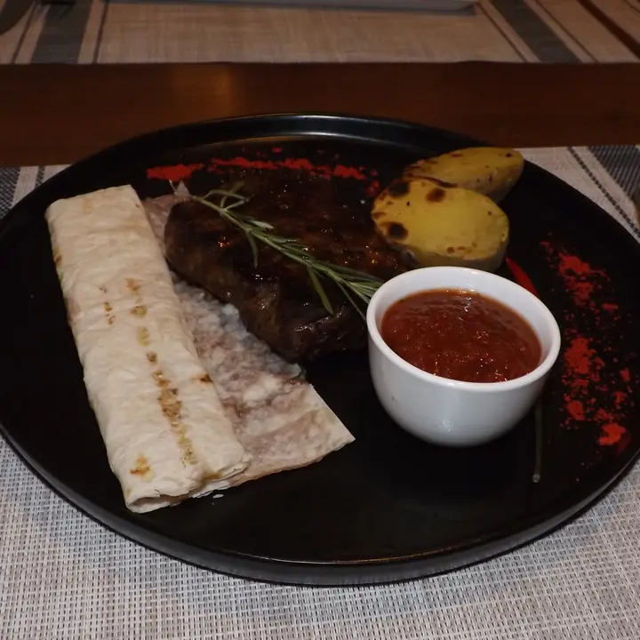
Стейк «Паприка»
1050 ₽Из толстого края телятины с томатным соусом. 200 г
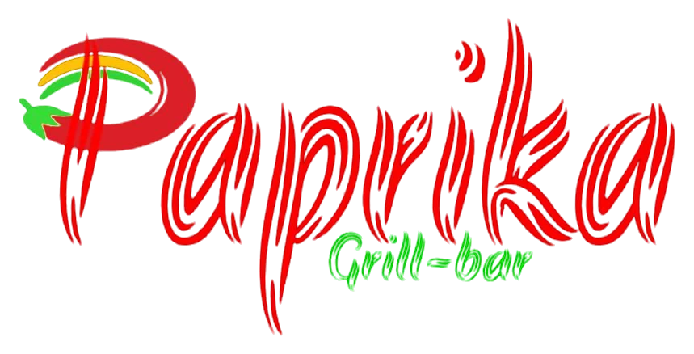
Днём бизнес-ланч, вечером стейки и шашлык на углях, а для юбилея или корпоратива – зал на Мира.
Три зала: деревянный – до 45 гостей, веранда с камином – до 30, цоколь – на 15–20 человек. Дату, число гостей и меню обсуждаем заранее.
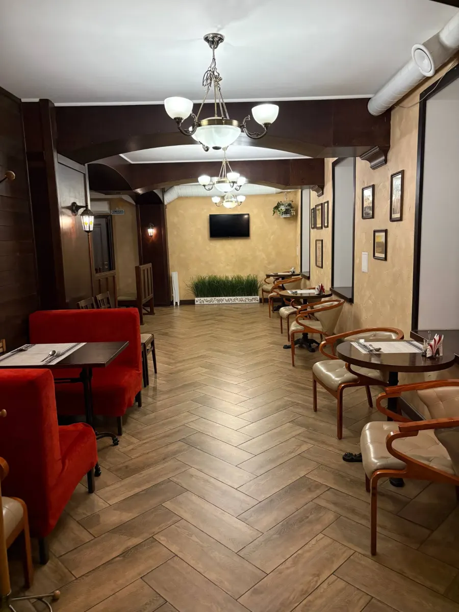
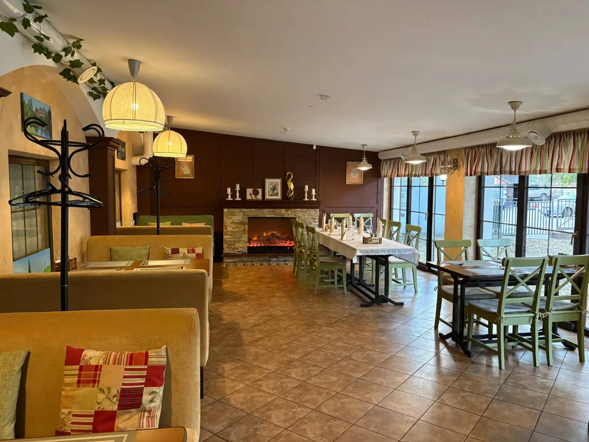
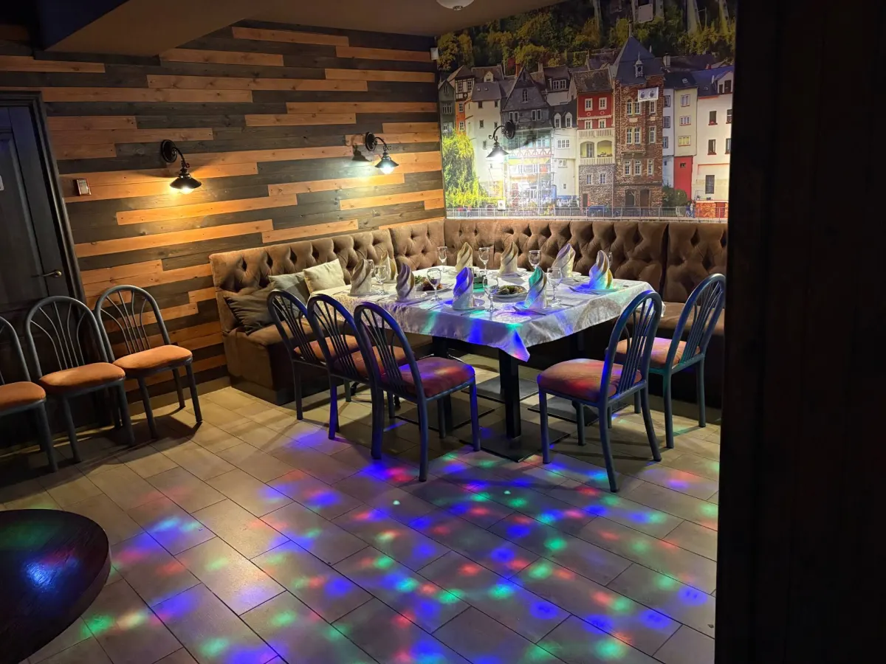
Гостей было около 30 человек. Очень понравилось и все гости остались довольны!!!Светлана, юбилей · отзыв на Яндекс Картах, декабрь 2022
Наш стол расположили вдоль витражных окон, отличный вид из окна.Марина Шугаева, юбилей мамы · август 2026
Отмечали новогодний корпоратив, коллегам очень понравилось!Родион Викторович · январь 2025
Напишите нам во ВКонтакте или позвоните и назовите дату, число гостей и формат – юбилей, день рождения, корпоратив. Подберём зал и вместе составим меню: гости пишут, что определялись с меню прямо с менеджером.
Цены и вес – из меню на карточке кафе. Фирменное блюдо – стейк «Паприка».

Из толстого края телятины с томатным соусом. 200 г
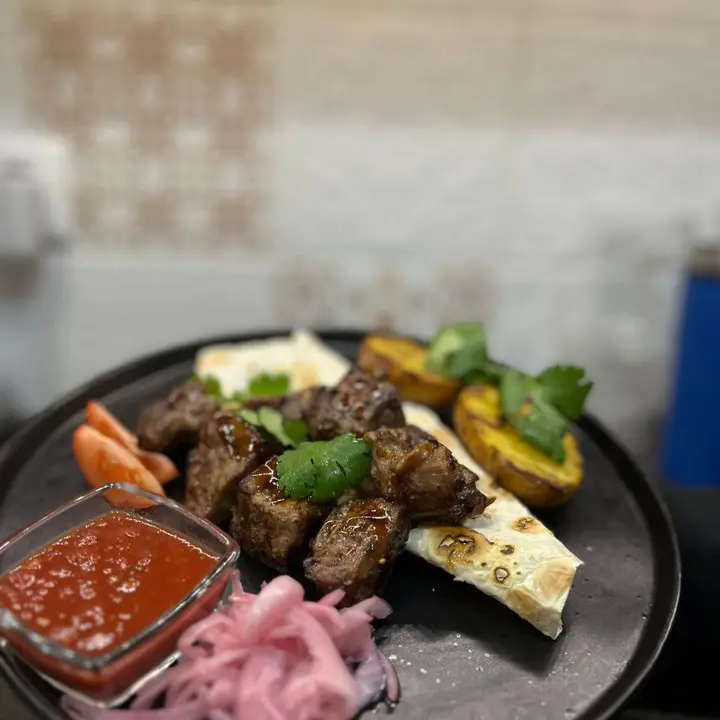
С фирменным соусом, маринованным луком и картофелем. 350 г
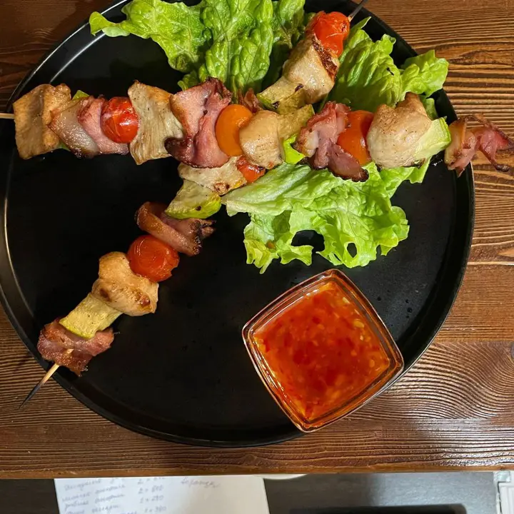
С цукини и беконом на шпажках. 270 г
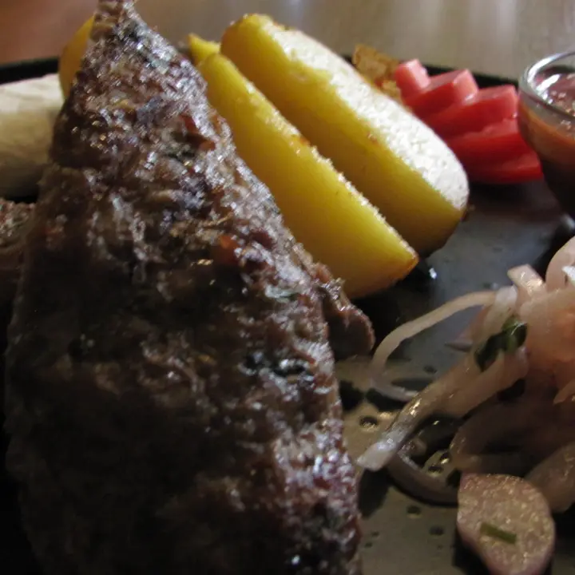
Говядина, с углей. 210 г
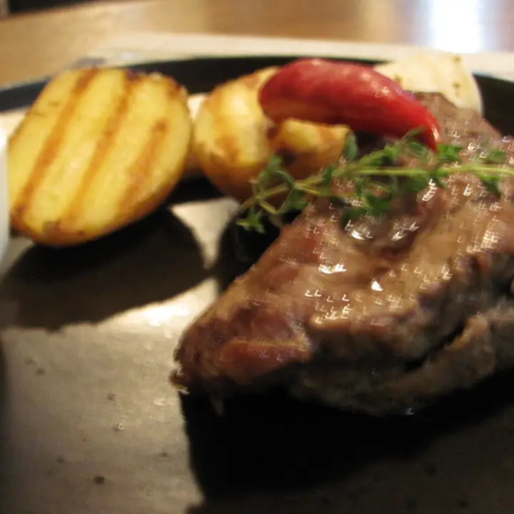
Телятина-вырезка, обжаренная на гриле, с соусом BBQ. 200 г
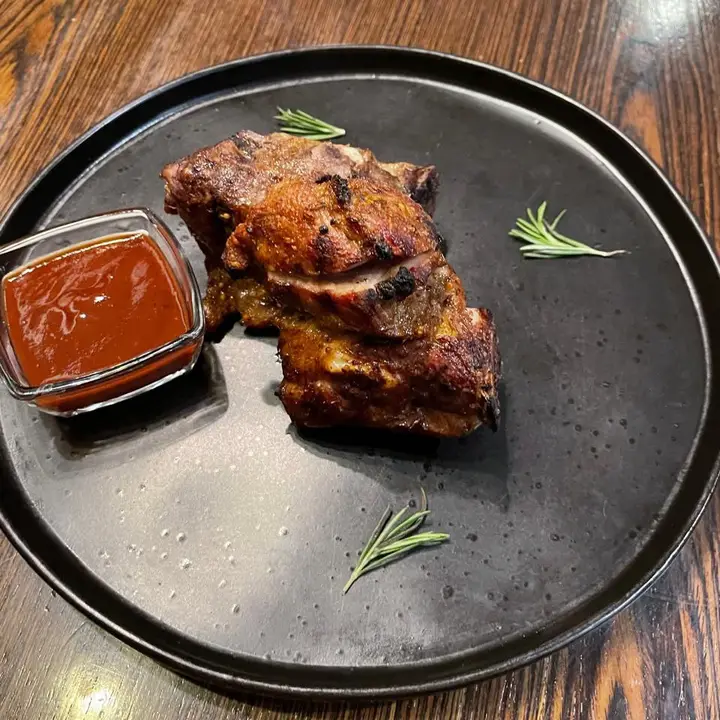
С соусом BBQ. 250 г
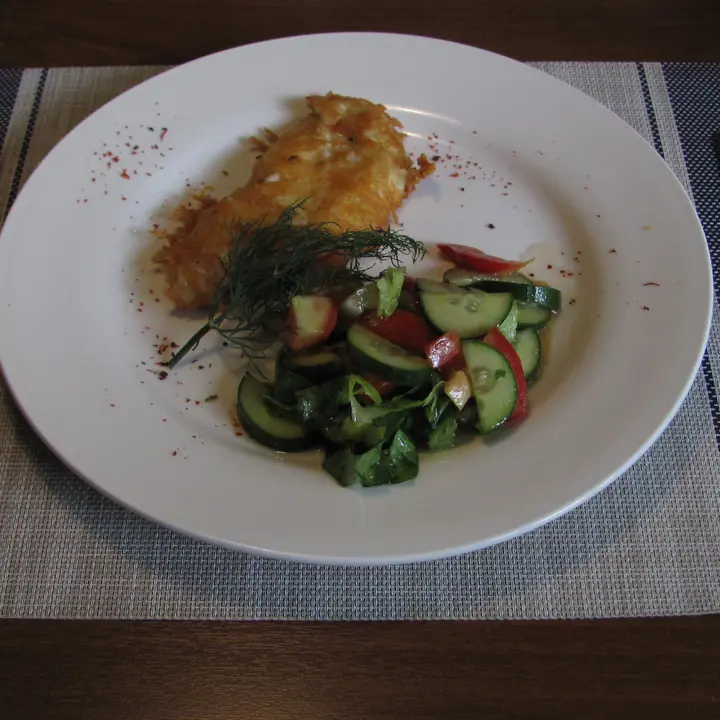
Филе в сырной корочке, с углей. 200 г
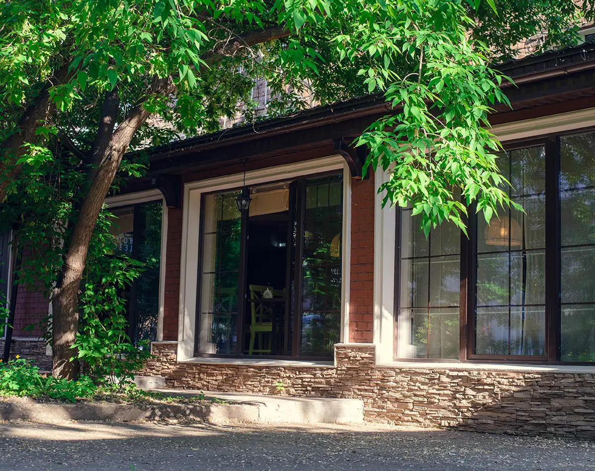
Всё из списка – с карточки кафе на картах. Летом работает веранда.
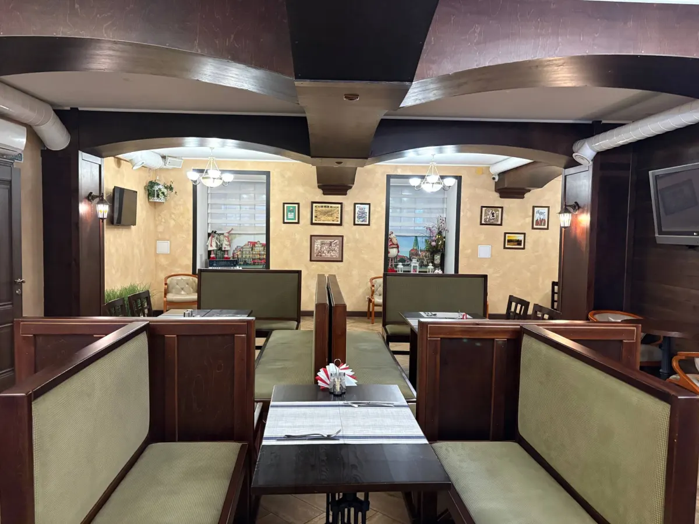
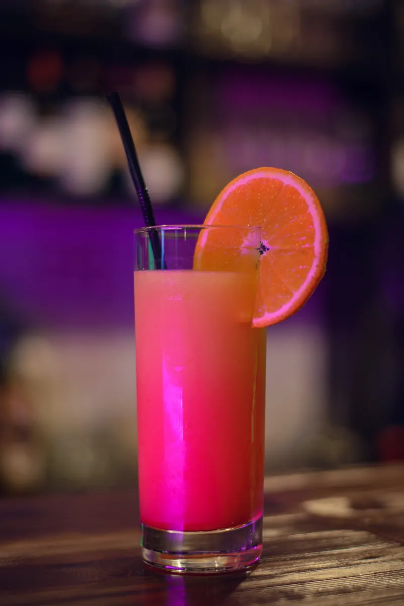
Скопированы с карточки на Яндекс Картах без правок.
«Отмечали в Паприке юбилей моей мамы. Отличное место для банкета. Уютно, вкусно. Наш стол расположили вдоль витражных окон, отличный вид из окна. Наши гости все оценили место, как очень удобное и приятное для проведения банкета. По меню определились с Кристиной, очень профессионально. Рекомендую.»
«Большая благодарность Паприке за мой День рождения! Всё вкусно, гости были очень довольны! А рулетики из баклажанов особенно восхитительны. Мясо и овощи на гриле, салатики с восхитительными соусами. Было просто по домашнему. Приду ещё!»
«Отличное место для обеда для офисных работников в центре города. Большой выбор блюд, каждый день разнообразное меню. Быстрое обслуживание, безналичный расчет. Уютная атмосфера. Рекомендую!!!»
Скажите, на сколько гостей и к какому часу. Для банкета – дату и формат, меню составим вместе.
Кнопка открывает сообщения группы «Паприки» во ВКонтакте. Удобнее голосом – звоните по номеру выше.